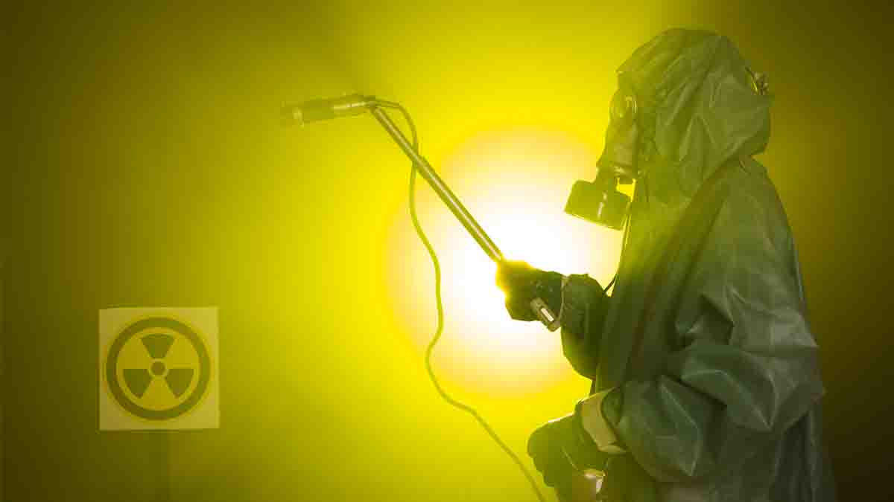

La siembra de nubes puede implicar el uso de productos químicos como yoduro de plata, que pueden ser inhalados por las personas y tener efectos nocivos en la salud respiratoria.
Las sustancias químicas utilizadas en la siembra de nubes pueden desencadenar alergias y causar irritaciones en la piel y en las vías respiratorias de las personas expuestas.
La siembra de nubes puede afectar la calidad del agua y de los alimentos al introducir contaminantes que pueden ser ingeridos por las personas, causando problemas de salud gastrointestinal y otros efectos adversos.
Los niños, ancianos y personas con problemas de salud preexistentes pueden ser especialmente vulnerables a los efectos negativos de la siembra de nubes en la salud, requiriendo una atención especial para proteger su bienestar.